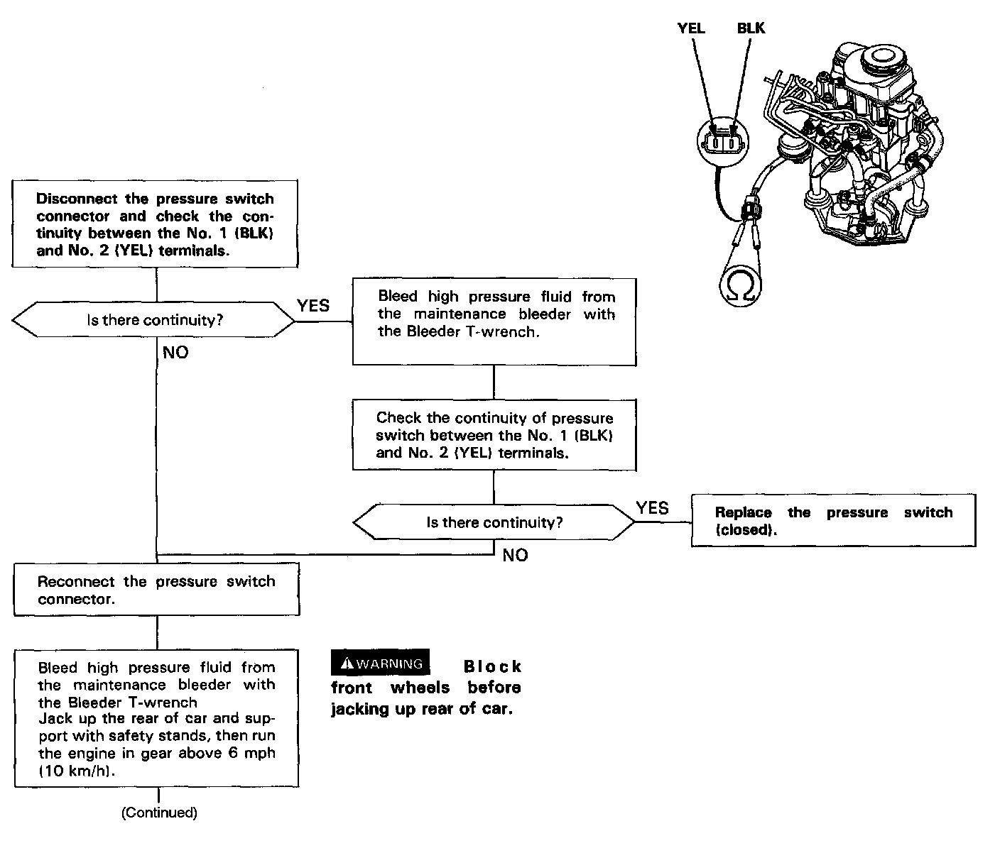
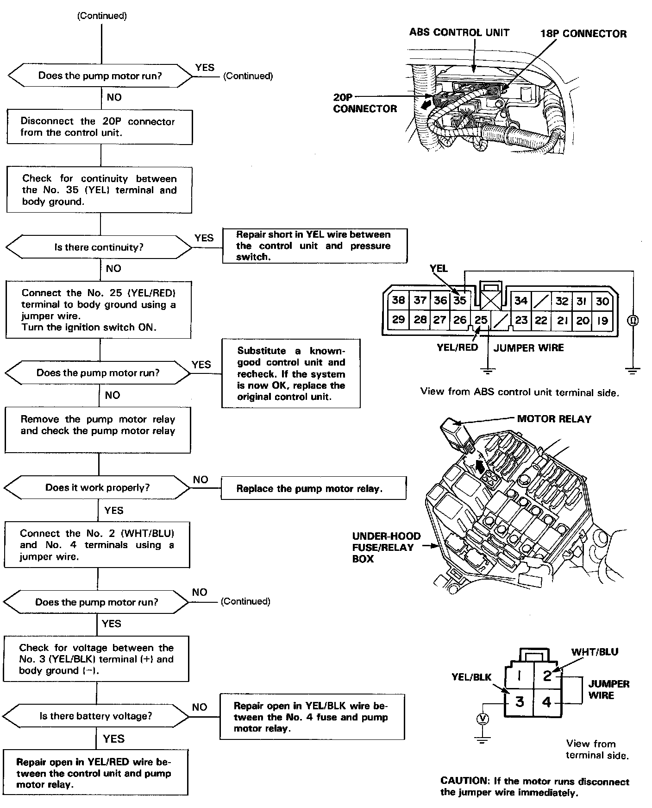
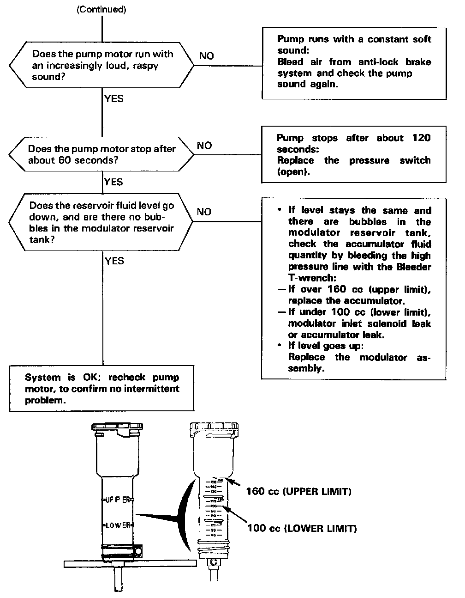
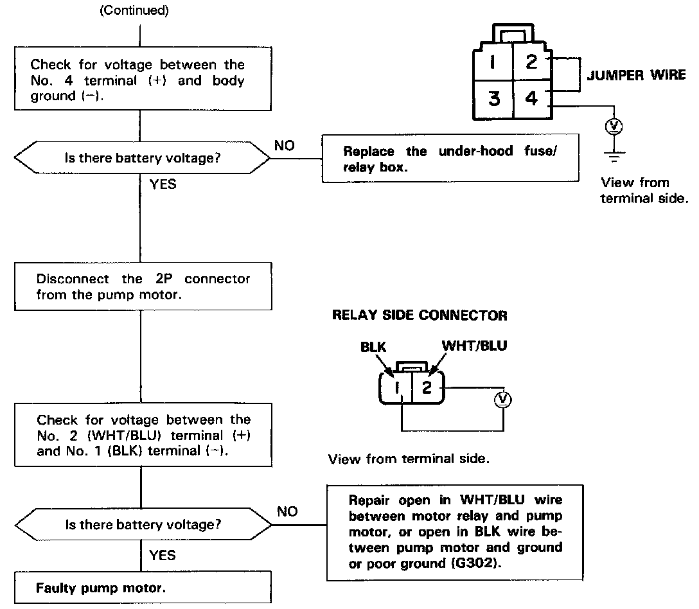

DTC 1
CAUTION: Use only the digital multimeter to check the system.NOTE:
- The ABS indicator light will remain on for a few seconds after the ignition switch has been turned on to show that the system circuit is functioning.
- The ABS indicator light does not blink when the following failures occur:
a. The contact points of the motor relay remain closed (the motor runs continuously even after the ignition key is removed).
b. YEL/RED wire is shorted or the ABS control unit is internally shorted (the motor stops when the ignition switch is turned off).
Pre-test steps:
- Check the ABS (40A) fuse.
- Check all brake system hoses and pipes (low and high pressure) for signs of leaking, bending or kinking. Check reservoir fluid level, and if necessary, fill to the MAX level.
Diagnostic Flowchart Part 1:




NOTE: The fluid enters the reservoir under pressure; wait 1 or 2 minutes for air bubbles to disappear and level to stabilize.